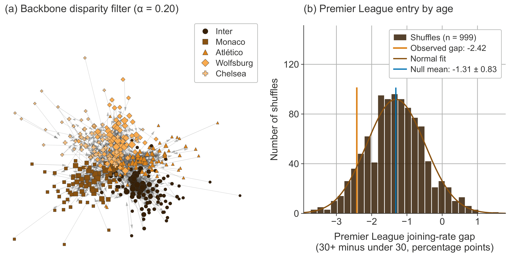
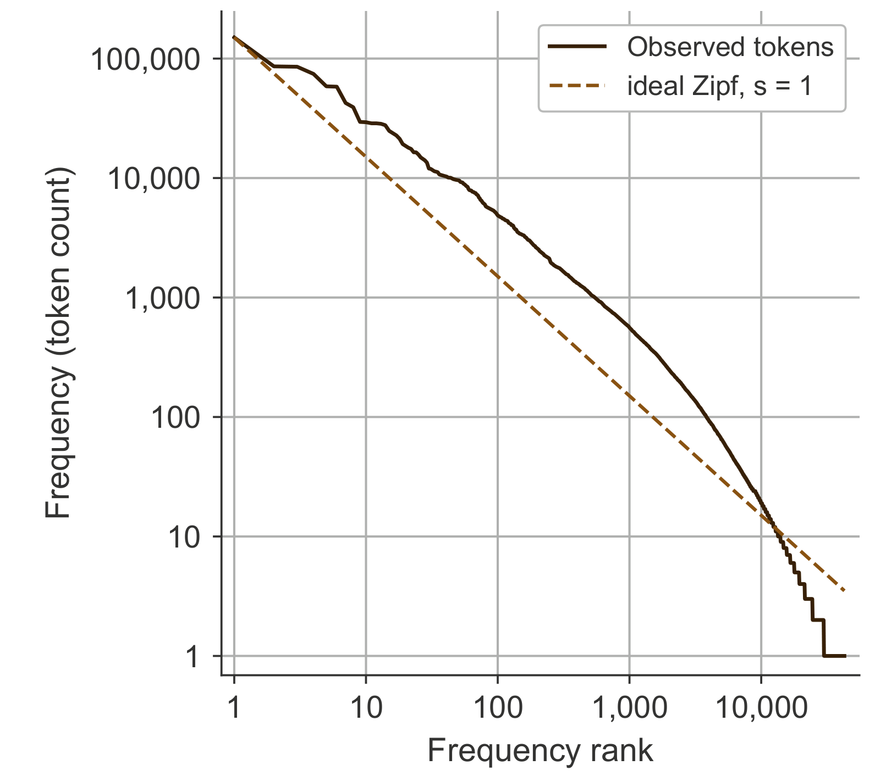
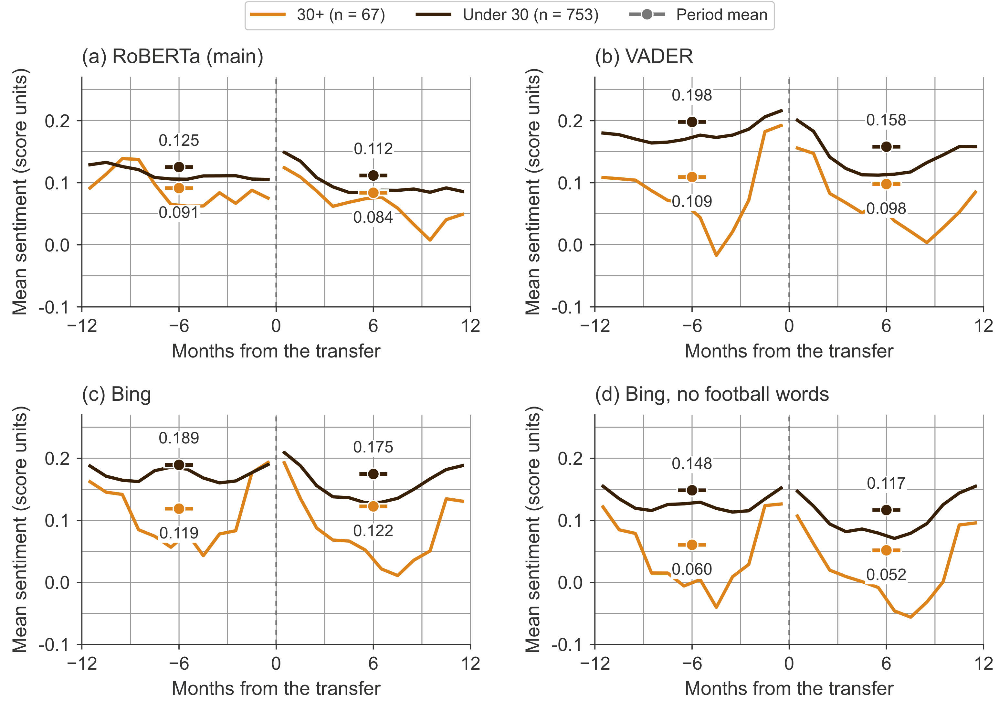

Does age matter in football?
The question and its data
Two data sources, two separate samples ↓
How does entry into the Premier League differ by player age, and how does the tone of Guardian coverage before and after Premier League signings differ by age?
Clubs are nodes; each arrow runs from the selling to the buying club, weighted by the number of transfers. Arrows into Premier League clubs are entries. Our data: 16,636 eligible transfers of 4,602 players, 2012/13–2024/25.
- PL player 1
- PL player 2
- ⋮
- PL player N
Up to a year before signing
Up to a year after signing
Each sentence is scored for tone and compared before and after the move. Our data: 820 Premier League signings with enough text: 67 aged 30+, 753 under 30.
Older transfers (30+) entered the Premier League less often (12.14% vs 14.56%), with limited statistical evidence (p = 0.098)

Observed gap
r = share of transfers entering the Premier League
How to read it
A lower (more negative) gap means older players enter the Premier League less often than younger players.
(a) Network backbone, disparity filter α = 0.20, five Louvain communities.
(b) One-sided p from 999 age-label shuffles within origin club and recorded season.
| With stopwords | Without stopwords | |||||
|---|---|---|---|---|---|---|
| # | Token | Count | % | Token | Count | % |
| 1 | the | 150,246 | 3.9 | season | 17,521 | 0.8 |
| 2 | and | 86,037 | 2.2 | £ | 15,740 | 0.7 |
| 3 | to | 85,471 | 2.2 | m | 14,903 | 0.6 |
| 4 | a | 74,360 | 1.9 | city | 11,627 | 0.5 |
| 5 | in | 58,569 | 1.5 | united | 11,265 | 0.5 |
| 6 | of | 58,167 | 1.5 | chelsea | 10,557 | 0.5 |
| 7 | ’s | 42,517 | 1.1 | unknown | 10,439 | 0.4 |
| 8 | for | 39,181 | 1.0 | manchester | 10,280 | 0.4 |
| 9 | his | 29,501 | 0.8 | form | 10,093 | 0.4 |
| 10 | is | 29,321 | 0.8 | injured | 9,960 | 0.4 |
99,976
linked sentence records
3.87 M
tokens
42,779
token types
13,022
hapax tokens (appear once)
No clear age difference in how Guardian tone changed after signing (+0.006, p = 0.76)

| Model | ρ (95% CI) | Sign right | 3-class |
|---|---|---|---|
| RoBERTa | 0.52 (0.38, 0.63) | 82% | 50% |
| VADER | 0.33 (0.21, 0.45) | 68% | 42% |
| Bing | 0.36 (0.22, 0.47) | 59% | 51% |
| Bing, no football words | 0.36 (0.23, 0.49) | 58% | 53% |
Spearman ρ: rank agreement with the human labels. Sign right: 85 positive or negative sentences. 3-class: all 196 sentences. Only 14 sentences concern players aged 30+.

RoBERTa older-minus-younger change: two-sided p from 5,000 age-label shuffles within signing season. Smaller differences remain possible.